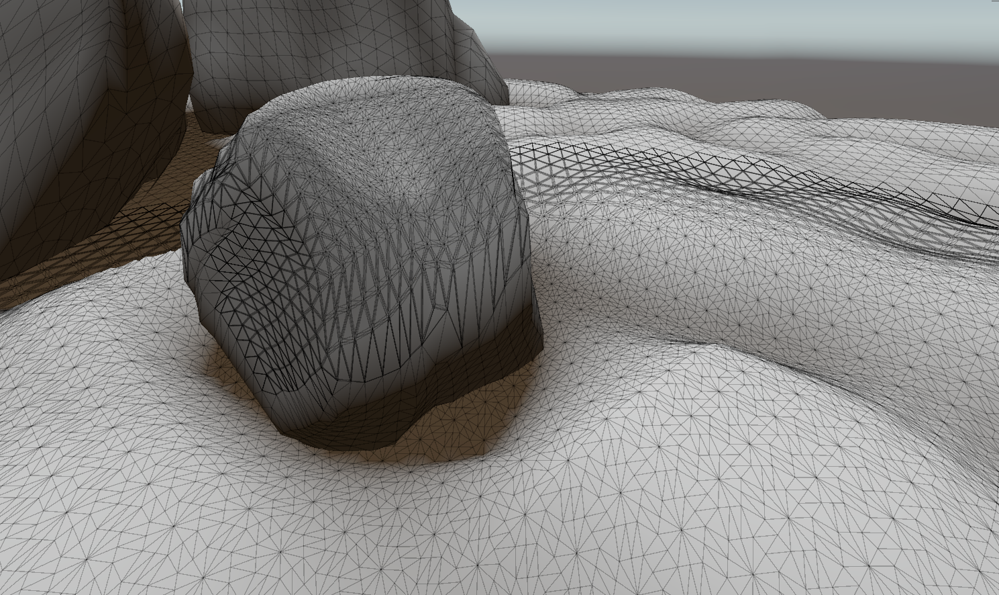
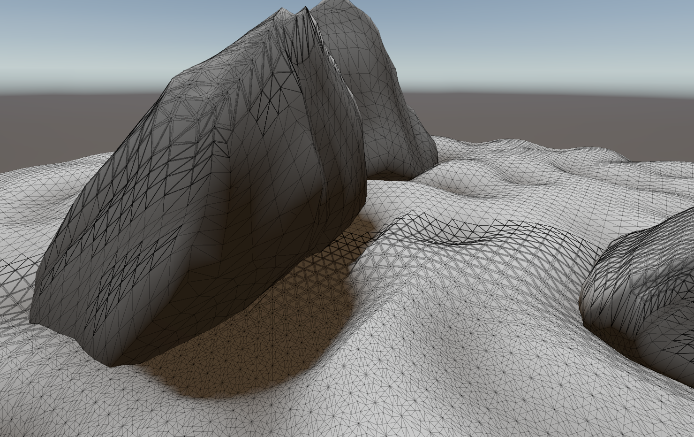
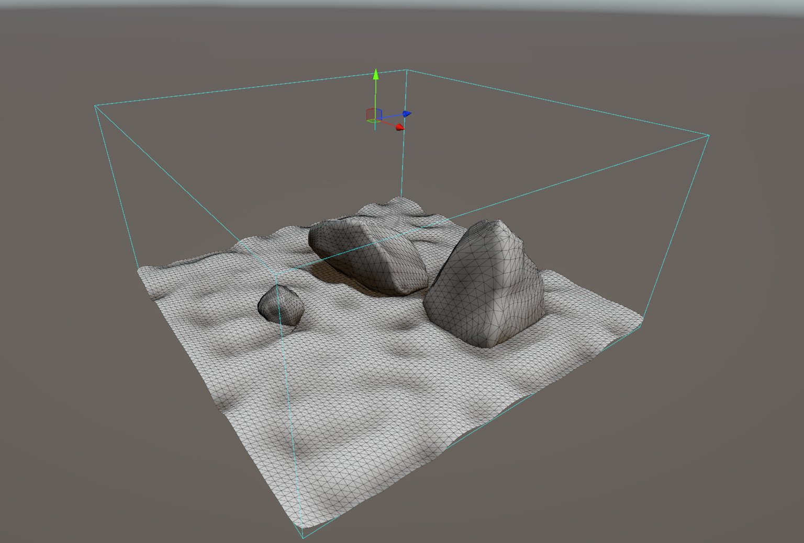
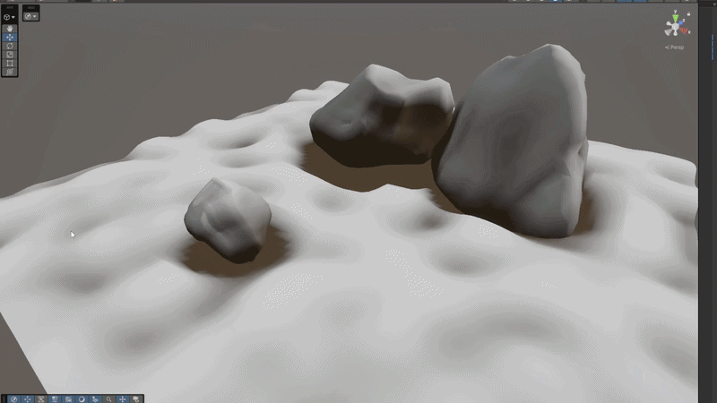

Nathan Gardea - Tesselated Snow
A snow shader built in Unity using HLSL

Overview - Tesselation fascninates me and I thought of this shader as the perfect oppurtunity to explore its benefits and its downsides. I do know that it is quite expensive relative to POM shaders, though I can see some benefits over them. In this shader, I wanted to create a snow mask texture that acts similar to a shadow mask that determines where snow is placed. Once snow is placed, the mesh will tesselate and dispace vertically. I want to also make this interactive. If an object moves across the surface, the snow will compress and regenerate slowly. This shader will add a lot of realism to a snow scene that I can create in a future project.
Current Version
- Snow Mask
- Interactable
- Regenerates over time
- Performant tesselation
Future Roadmap
- World space snow mask.
- Rounded vertex displacements.
- Lighting.
- Prevent floating objects from contributing to snow mask at a certain threshold.
- Interactability using sdfs.
- Regenerating snow.
Tesselation

- Fractional odd partitioning.
- Distance based tesselation.
Snow Mask

- Top down orthographic depth pre pass.
- GUI to help identify baking zone.

- Updates in real-time.